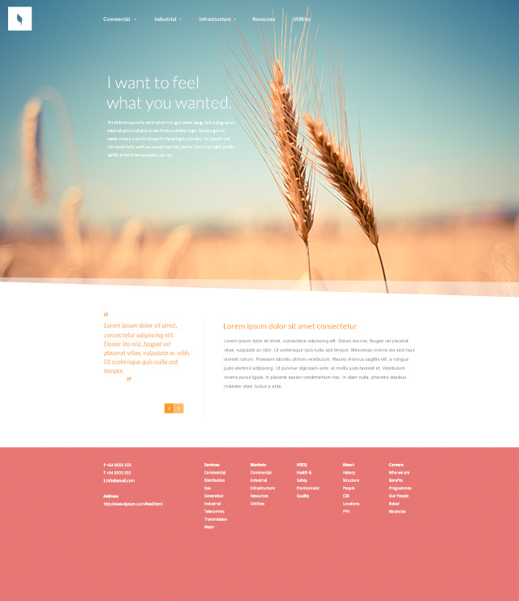

I started this project with a PSD template as my inspiration. I then used Photoshop to slice images I knew the site would need. After this, I began to build the page in HTML5 and CSS. To make things more challenging, I decided not to use a framework and make it completely responsive using CSS. You can see the final result here.
